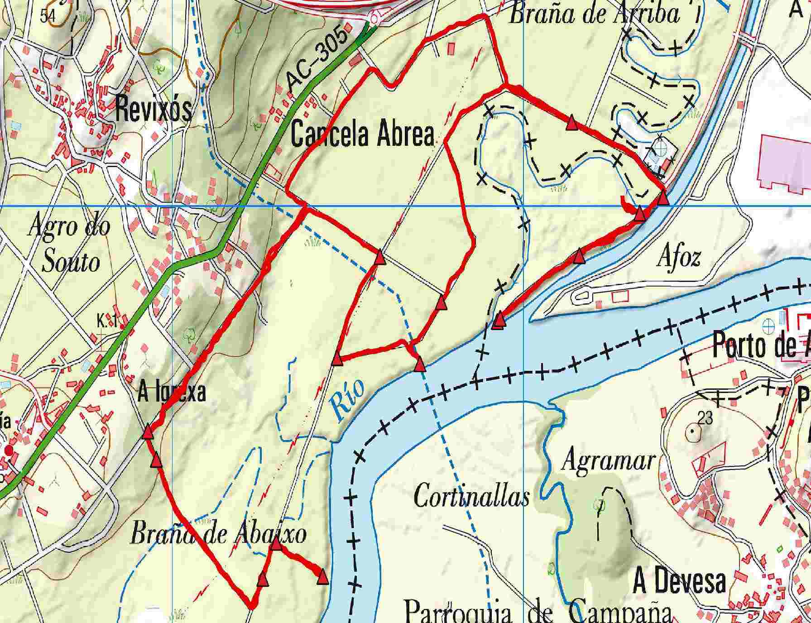
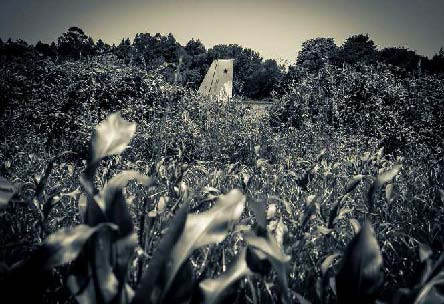
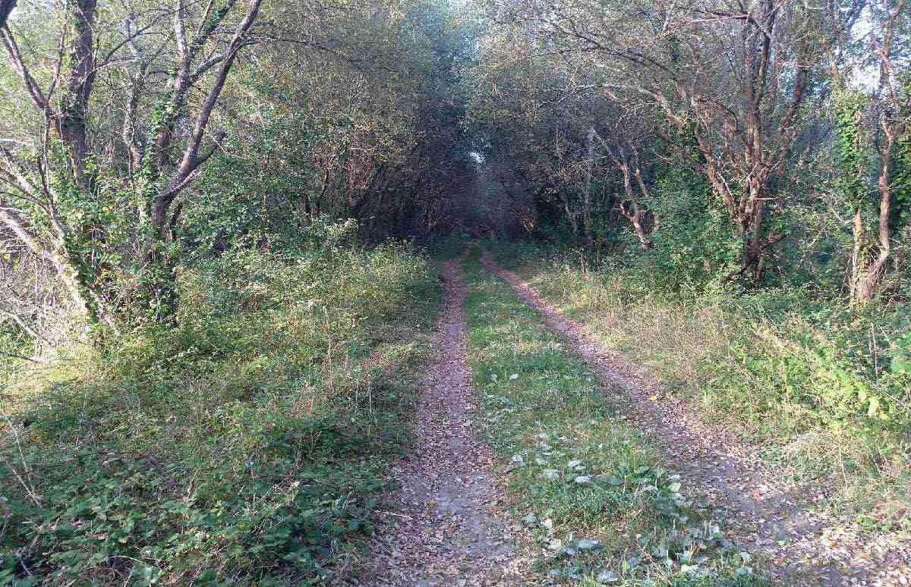
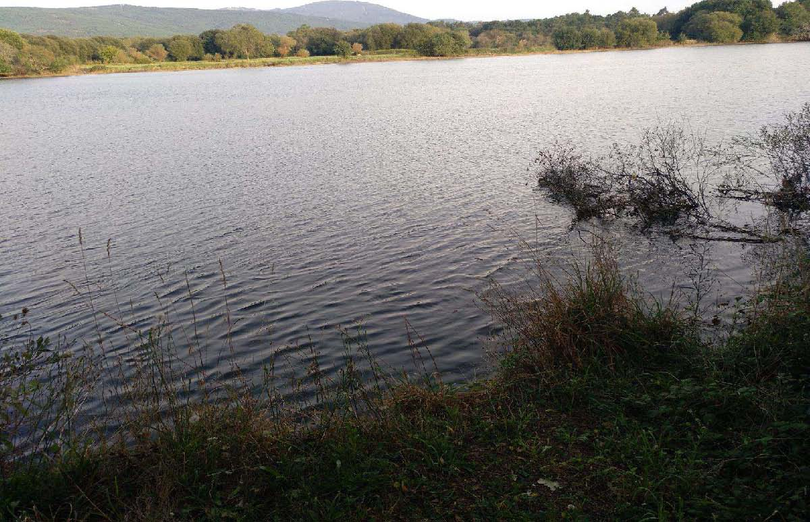
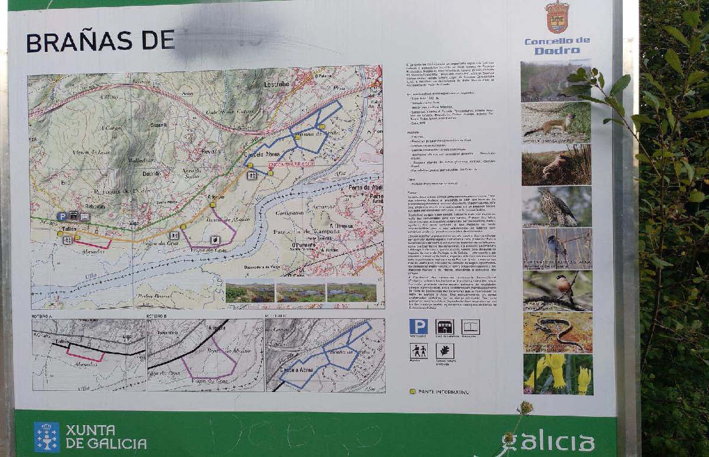
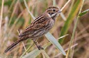
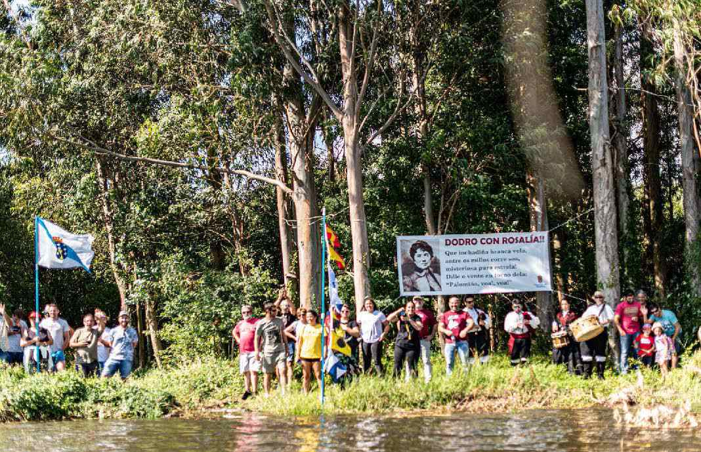
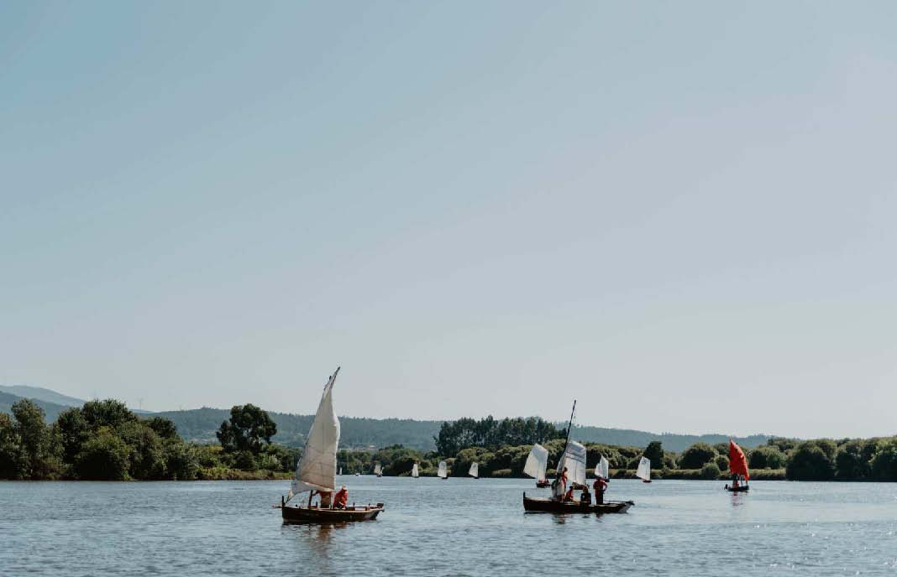
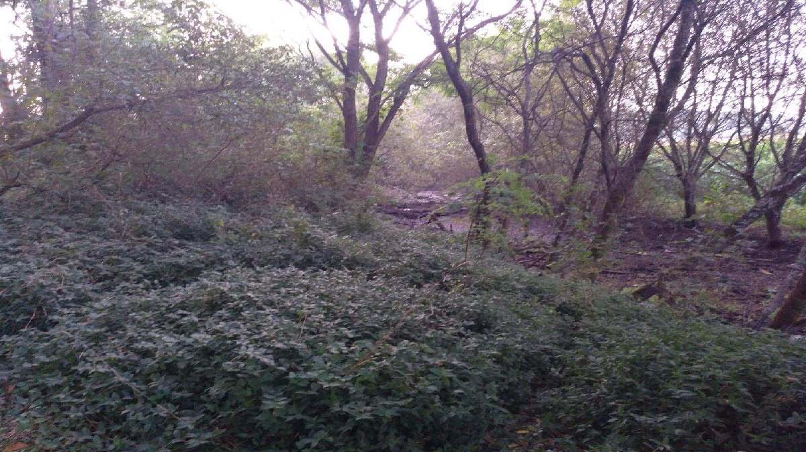
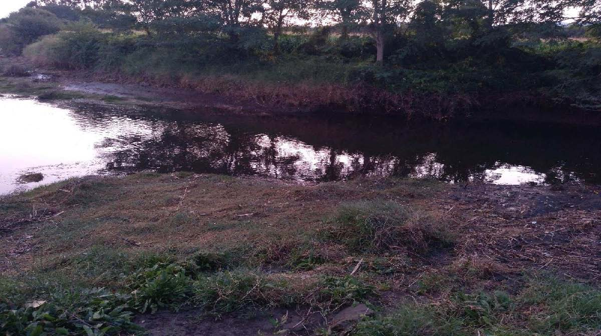

Ruta que percorre as Veigas de Lestrobe e os lugares que Eduardo Rivo retratou onde a “Inchadiña branca Vela, antros millos corre soa” como decía Rosalía de Castro.
| Inicio | Acceso ao campo do Bosque |
| Fin | Área recreativa do Bosque |
| Distancia | 7,83Km |
| Tipo | Circular |
| Duración | 1h 46min |
| Dificultade | Baixa |

Acceso ás Brañas
“Iniciamos o percorrido nunha pista forestal, próxima ao Campo do Bosque, que nos facilitará o acceso á zona das Brañas..”

Vexetación
“A medida que nos achegamos á ribeira a vexetación é cada vez máis frondosa e adopta unha forma de bóveda. Nas Brañas podemos atopar bosques aluviais de ameneiros, salgueiros, freixos, sabugueiros, espadanas, xuncos, tamén herba salgueira, mentraste, narciso ou xaras.” “A medida que nos achegamos á ribeira a vexetación é cada vez máis frondosa e adopta unha forma de bóveda.”

Saída ao mar
“Esta zona húmida do esteiro do Ulla, forma parte do Sistema fluvial Ulla-Deza, declarado ZEC (Zona de Especial Conservación) e tamén Lugar de Interese Comunitario (LIC), recollido na Rede Natura 2000 da Consellería de Medio Ambiente.” “Pronto albiscamos as augas do río.”
Punto de información das Brañas
“Son a zona húmida máis grande de Galicia con 954,20ha e albergan unha gran riqueza fáunica, ambiental e ecolóxica. Nelas viven de máis de setenta especies de aves, algunhas moi escasas ou destacadas. Aquí aniña unha subespecie da Escribenta das canaveiras, a Emberiza schoeniclus lusitánica, presente nunha escasa quincena de localidades galegas e portuguesas, e que se diferencia morfoloxicamente do resto de exemplares da súa especie que se reproducen en Europa e Asia. Cría exclusivamente en zonas encharcadas, costeiras ou na súa proximidade. Ten unha poboación moi reducida pois depende duns ecosistemas moi fráxiles. Está protexida legalmente e catalogada en perigo de extinción.Neste espazo tamén podemos observar outras aves en situación vulnerable como a folosa acuática e o picanzo vermello. Máis comúns son a fulepa das xunqueiras, a garza real, a aguia perdiceira, o gabián, o ouriolo, a gaivota chorona, o cardeal, a bubela, a rula, o lavanco e a cerceta. Nesta zona dtamén están presentes outras especies ameazadas como o mexilón de río, a anguía e a toupa de río. Aquí é habitual a pesca da lamprea, zamborca e salmón. Outros animais comúns das Brañas son os porcos bravos que desde as terras altas do Concello acoden a esta “despensa natural” na procura de alimento.” “Ás Brañas constitúen un lugar de interese natural e paisaxístico incluído na Rede Galega de Espazos Protexidos.”
 Recepción da Inchadiña no Agro das Silvas
“Para os que se criaron ollando o encher e devalar do Ulla era un soño. Era un soño para os que viron os derradeiros mecos, dornas e galeóns subiren e baixaren coas mareas...O proxecto xurdiu e levouse a cabo dentro das celebracións do 150 aniversario da publicación de Cantares gallegos, en 2013.A Fundación Rosalía de Castro propúxolle á Escola de Navegación Tradicional (ENT) Dorna da Illa da Arousa renderlle homenaxe a Rosalía de Castro desde o mar, desde a súa cultura e a súa xente. O punto de partida eran uns versos do libro que se conmemoraba e nos que a escritora describía os encantos da súa Terra de Iria (“Como chove miudiño”) e en concreto unha escena náutica no Ulla, na denominada Ría de Padrón, no mar que din os vellos:Esa “palomiña” (bolboreta) á que lle fai “arrolo a branda ría”, esa vela branca, misteriosa estrela que navega co casco invisíbel entre o millo, era sen dúbida unha dorna. O soño era, pois, navegar en dorna no mar de Iria, volver incha-las velas e chegar coa marea polo Ulla e polo Sar deica a estatua de Rosalía en Padrón...Deseñouse e perfilouse a navegación...Aliñariámonos fronte a Rosalía amarrados a un cabo de banda a banda no Sar, izariamo-las velas ó son da Antiga Marcha do Reino de Galicia facéndoas flamexar en honra da nosa autora. Logo en terra, cos nosos remos ergueitos, delatores do mar que todos levamos dentro, cantariamos a coro o himno diante dela, feita pedra no Espolón...as fiestras do soño estaban xa para sempre abertas.” Dodro recibe con agarimo ás dornas da Inchadiña que suben polo Ulla, neste punto do Agro das Silvas.” “Que inchadiña branca vela / antre os millos corre soa, / misteriosa pura estrela! / Dille o vento en torno dela: / «Palomiña, voa!, voa!»”
 Sar Vello
“Aquí atopamos o antigo leito ao que facía referencia o dito: "é máis retorcido que o río de Padrón" debido aos seus meandros. Aínda, hoxe, pode distinguirse grazas á vexetación de ribeira que o cobre. O vello curso do río Sar é o límite natural que separa os Concellos de Padrón e Dodro.” “O curso do río Sar modificouse nos anos sesenta para poñelo recto.”
Desembocadura do Sar Vello
“Preto resultará doado localizar o punto da desembocadura do Sar vello.Este tramo da ruta transcorre polas terras do veciño municipio de Padrón.”

A Foz
“O Concello de Padrón dispuxo, hai uns anos, unha área recreativa para o desfrute da paisaxe e natureza que brinda o espazo no que as augas do Ulla e do seu afluente, o Sar, converxen.” “Aquí é habitual atoparnos con profesionais ou persoas afeccionadas ao mundo da ornitoloxía, observando as múltiples especies de aves que aniñan na ribeira.”